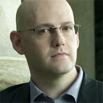

Shared Voices offers a forum for welcoming some of the most expansive thinkers of our time to RISD. Each shares our community’s commitment to the exchange of ideas and to the potential for innovation when artists, designers, activists, technologists, social scientists and other scholars come together to learn from one another. Faculty co-hosts welcome each speaker to campus and facilitate interaction with students prior to the main event—a public conversation in the evening.

Shared Voices
the RISD
February 20-22, 2015, 7:30pm
RISD Auditorium
17 Canal Walk (at Market Square)
Providence, Rhode Island
With the keywords of success and happiness, the three inspirational speakers tell you about life, true success and happiness. For someone who pursues success and, or happiness, meet and listen to these three passionate speakers: Brad Meltzer, Jeffrey Tambor, and Shawn Achor.
